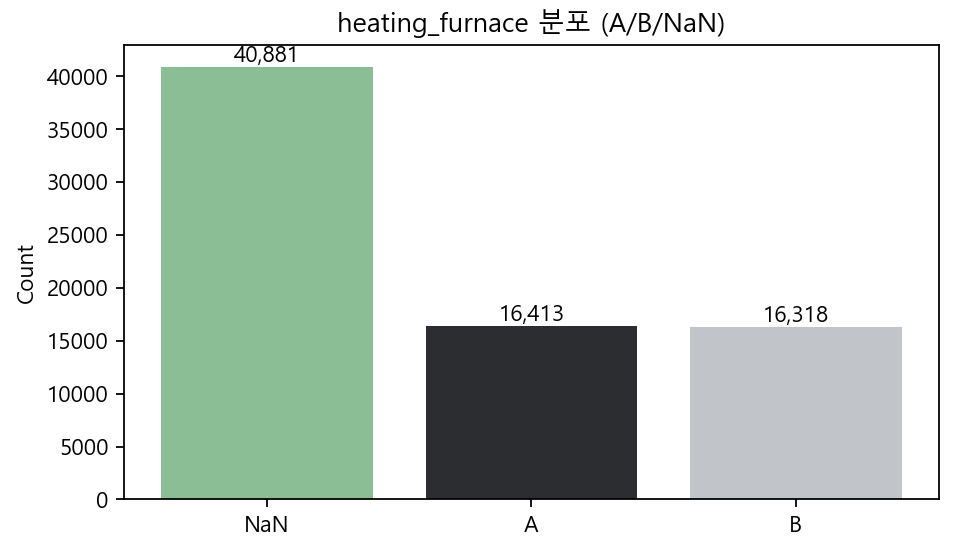

제거 이유
결측이 매우 많고 기본 모델에서 변수 중요도 낮음 → 학습에서 제거
특정 인덱스 구간 확인하기 (73406–73413)

- 결측이 아닌 구간:
mold_code일정,date/count연속 → 동일 furnace 연속 생산으로 해석 - 결측 구간(예: index 73407, 73408):
mold_code8917/8722로 상이,molten_volume61.0→84.0,count222/219로 불연속 → 서로 다른 furnace로 보임 - 결론: 동일
mold_code이면서molten_volume/count가 이어지면 하나의 furnace에서 연속 생산. 반대로 결측(NaN) 구간은 최소 2개 이상의 상이한 집단일 가능성이 큼 - 모델 관점: 변수 중요도도 높지 않아 최종적으로 heating_furnace 열 제외

제거 이유
결측이 매우 많고 기본 모델에서 변수 중요도 낮음 → 학습에서 제거
mold_code별 count - molten_volume 산점도
- mold_code별로 나눠서 count에 따라 molten_volume 그래프를 그렸을 때
count에 따라 molten_volume이 채워지고 다시 줄어드는 양상이 보임
- 그러나 결측치가 너무 많아서 정확한 값을 예측하기 어렵고 기본 모델에서 변수 중요도도 높지 않아 최종적으로 heating_furnace 열 제외
- 이상치 1449.0을 센서 오류 코드로 가정 → 두 칼럼 모두 제거
- registration_time: 'time'+'date' 결합 정보(중복 의미) → 제거
- emergency_stop이 결측인 경우 1번 존재, 이때 이 행의 나머지 칼럼들 대부분 결측 → 학습 데이터에서 행 제거
- 모델 예측이 끝난 뒤, emergency_stop 값을 확인해서 결측인 경우 불량으로 나오도록 함
- count, mold_code, time, molten_volume 등이 겹치는 경우 다른 모든 변수들도 같은 값을 가짐
- 정보 중복을 피하기 위해 하나만 남기고 나머지 중복 행들 삭제
- molten_temp 결측이 연속되어 나오는 경우 거의 없음 → 앞뒤 행들과 이어지도록 두 행들의 평균으로 대치
- train 데이터에서는 이전 행과 다음 행의 molten_temp 값들의 평균으로 대치
- test 데이터에서는 바로 직전 행의 molten_temp 값으로 대치